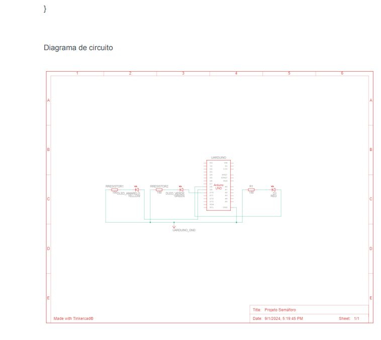
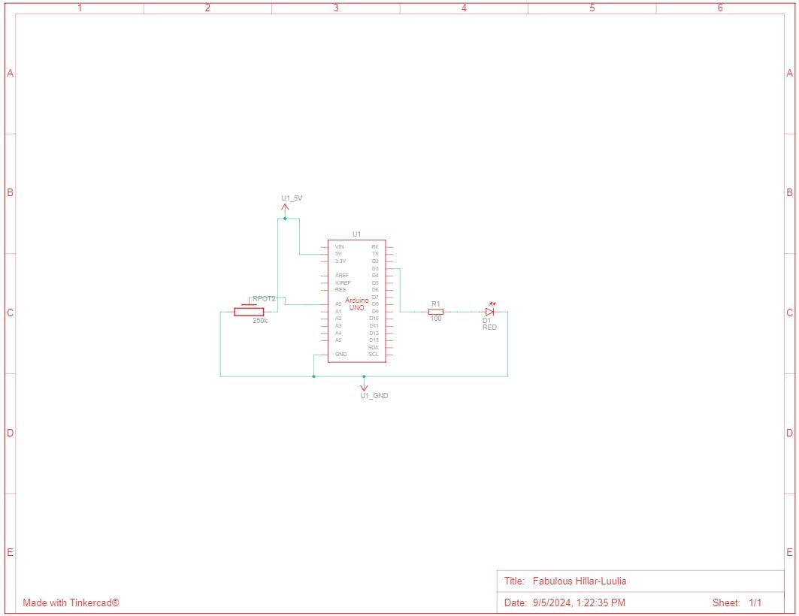
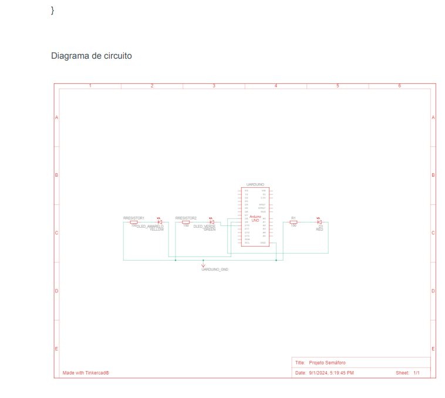
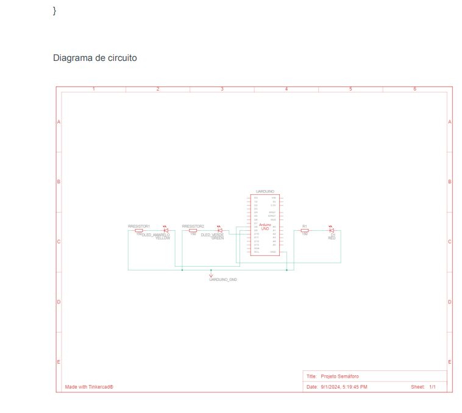

Certo, somos um grupo de alunos de Sistema da Informação onde nos foi passado trabalhos relacionados a Arduino,
além de realizarmos automações e apredermos na prática o sistema por inteiro, realizamos alguns relatórios para
que possam nos ajudar e outros estudantes que buscam saber um pouco mais sobre, esperamos que nossas analises os satisfaçam!
Período: 4°
×
Semáforo em Arduino
Disciplina: Sistemas de Computação e de Informação
Laboratório: C32 e C33
Data: 21/08/2024
O Arduino Semáforo é um projeto educacional e de automação que utiliza a plataforma
Arduino para simular o funcionamento de um semáforo de trânsito. Este tipo de projeto é
bastante popular entre iniciantes e entusiastas de eletrônica, pois permite aprender
conceitos básicos de programação, eletrônica e controle de hardware.
Em um Arduino Semáforo, componentes como LEDs (geralmente nas cores vermelho,
amarelo e verde), resistores e uma placa Arduino são usados para replicar o ciclo de
funcionamento de um semáforo real. O objetivo é programar o Arduino para acender os
LEDs em uma sequência que represente os sinais de trânsito, simulando o controle de
tráfego.
Além de ser um ótimo ponto de partida para quem deseja aprender sobre
microcontroladores, o projeto também oferece a oportunidade de explorar tópicos mais
avançados, como sensores, controle de tempo, e até mesmo a criação de sistemas de
tráfego inteligentes. É uma atividade prática e divertida que combina teoria com aplicação
real, incentivando o aprendizado ativo e a criatividade.
Objetivo:
O projeto Arduino Semáforo tem como objetivo principal simular o funcionamento de um
semáforo de trânsito utilizando a plataforma Arduino, proporcionando um ambiente de
aprendizado prático para estudantes e entusiastas de eletrônica e programação.
Os objetivos específicos deste projeto incluem:
1. Introduzir conceitos básicos de eletrônica e programação: O projeto permite que os
participantes aprendam sobre o uso de componentes eletrônicos, como LEDs, resistores, e
a placa Arduino, além de conceitos de programação para microcontroladores.
2. Desenvolver habilidades em programação de Arduino: Por meio da escrita de códigos
para controlar a sequência de funcionamento dos LEDs, os participantes aprimoram suas
habilidades em lógica de programação e controle de hardware.
3. Simular o ciclo de operação de um semáforo real: O projeto busca replicar de maneira
realista o funcionamento de um semáforo, incluindo os tempos de acendimento das luzes
vermelha, amarela e verde, o que ajuda a entender melhor como sistemas de controle de
tráfego operam na prática.
4. Fomentar a criatividade e a resolução de problemas: Ao trabalhar com o Arduino
Semáforo, os participantes são incentivados a personalizar o projeto, adicionar novas
funcionalidades (como sensores para detectar veículos ou pedestres) e resolver problemas
que surgem durante o desenvolvimento.
5. Aplicar conhecimentos de forma prática e lúdica: Além de ser um excelente recurso
educacional, o projeto oferece uma abordagem divertida e interativa para o aprendizado de
conceitos complexos, facilitando o engajamento e a retenção de conhecimento.
Assim, o Arduino Semáforo é uma excelente ferramenta para aprender eletrônica e
programação de forma prática e divertida, ao mesmo tempo em que promove o
entendimento dos sistemas de controle de tráfego urbano.

Procedimentos - Enquanto estávamos conduzindo o projeto do semáforo buscamos
entender por completo os circuitos usados no projeto, com os conhecimentos adquiridos
realizamos o projeto em sala de aula onde cada um dos integrantes ficou responsável por
uma parte do projeto.
Resultados:
O projeto Arduino Semáforo visa criar um protótipo funcional de semáforo utilizando a
plataforma Arduino, permitindo aos participantes aprender eletrônica e programação de
maneira prática. Os resultados esperados incluem:
- Funcionamento correto do semáforo, com LEDs acendendo na sequência adequada.
- Desenvolvimento de habilidades em programação e eletrônica.
- Melhoria na capacidade de resolver problemas e aplicar conceitos teóricos.
- Estímulo à criatividade e inovação, com possibilidade de incluir novas funcionalidades.
- Maior interesse em ciência e tecnologia, além de habilidades interpessoais, como trabalho
em equipe e gestão de projetos.
Esse projeto é uma ferramenta educacional eficaz que combina aprendizado técnico com
uma abordagem prática e envolvente.
Discução - Para nosso primeiro projeto discutimos sobre como deveria ser a aplicação
do semáforo, pois mesmo sendo um projeto simples para se fazer no arduino buscamos
deixar o projeto o mais próximo possível da realidade, para realizar isso deixamos o
semáforo configurado para que ele se aproximasse muito de um semáforo real.
Conclusão - Ao final do nosso primeiro projeto revemos todo o escopo do projeto e
ficamos satisfeitos com a finalização do mesmo, não tendo complicações no
desenvolvimento do projeto conseguimos alcançar todos os resultados esperados do
mesmo
Referência:
MCROBERTS, Michael. Arduino Básico. 2. ed. rev. São Paulo: Novatec, 2015. 505 p. v. 1. ISBN 978-85-7522-404-5.
Disponível em: Link.
Acesso em: 02 set. 2024.
Disciplina: Sistemas de Computação e de Informação
Laboratório: C32 e C33
Data: 28/08/2024
O Arduino é uma plataforma amplamente utilizada tanto por iniciantes quanto por profissionais para desenvolver sistemas interativos.
Um dos componentes mais utilizados em circuitos eletrônicos é o potenciômetro,
um dispositivo que permite a variação de resistência e, consequentemente, a modificação de sinais de controle.
Este trabalho tem como objetivo desenvolver um potenciômetro funcional usando a plataforma Arduino, proporcionando uma aplicação
prática de controle de intensidade de um LED por meio da variação de tensão.
Objetivos
O objetivo principal deste trabalho é montar e programar um circuito eletrônico baseado no Arduino para simular o comportamento de um potenciômetro.
O circuito deve permitir a variação de intensidade de um LED através da rotação de um potenciômetro físico, permitindo o controle de corrente que atravessa o componente.
Objetivos específicos:
- Montar o circuito com o Arduino, um potenciômetro e um LED.
- Programar o Arduino para ler o valor analógico do potenciômetro e ajustar a intensidade do LED.
- Testar e validar o funcionamento do sistema.
Procedimentos
Após a montagem do circuito e a gravação do código no Arduino, o sistema foi testado girando o
potenciômetro e observando a variação na intensidade do LED.
Foram realizados vários testes para verificar a suavidade e a resposta do LED ao movimento do potenciômetro.
void loop()
{
valor = map(analogRead(potenciometro),0,1023,0,255);
analogWrite(led,valor);
Serial.println(valor);
delay(10);
}
Diagrama

Discussão
A montagem e programação do potenciômetro com o Arduino permitiram a criação de um circuito de
controle simples e eficiente. Durante o desenvolvimento, foi observado que o valor analógico
lido pelo Arduino pode ser influenciado por ruídos, especialmente em valores extremos, o que
poderia ser atenuado com o uso de técnicas de filtragem. Contudo, para esta aplicação simples,
a variação de intensidade foi suficientemente precisa. A técnica de PWM utilizada no Arduino
permitiu a variação de brilho de forma linear, respondendo bem à rotação do potenciômetro.
Um ponto interessante a ser considerado em projetos futuros seria a implementação de uma interface
gráfica para visualizar em tempo real os valores lidos do potenciômetro e a intensidade do LED,
oferecendo uma aplicação ainda mais interativa.
Conclusão
Este trabalho demonstrou a viabilidade de desenvolver um potenciômetro funcional usando a plataforma Arduino.
O sistema foi montado e programado com sucesso, permitindo o controle de um LED através da variação da
resistência do potenciômetro. A simplicidade do projeto mostrou a flexibilidade e acessibilidade do Arduino
para criar soluções de controle analógico em diversos contextos. Futuras melhorias podem incluir técnicas de
filtragem de ruído e uma interface gráfica para monitoramento dos dados.
Referência:
MCROBERTS, Michael. Arduino Básico. 2. ed. rev. São Paulo: Novatec, 2015. 505 p. v. 1. ISBN 978-85-7522-404-5.
Disponível em: Link.
Acesso em: 02 set. 2024.
Disciplina: Sistemas de Computação e de Informação
Laboratório: C32 e C33
Data: 04/09/2024
Os sensores com LEDs normais, que emitem luz em uma única cor, são amplamente
utilizados em sistemas simples de detecção e sinalização. O LED normal é conhecido por
sua eficiência energética e simplicidade, sendo uma escolha comum em aplicações que não
necessitam de uma variação de cor ou controle sofisticado de iluminação. Esses sensores
podem ser encontrados em dispositivos como sensores de presença, indicadores de status
em equipamentos eletrônicos, e sistemas de iluminação simples.
Este relatório se concentrará no funcionamento, vantagens e limitações dos sensores que
utilizam LEDs normais, discutindo suas aplicações típicas e adequação a diferentes
contextos.
OBJETIVOS
- Compreender o funcionamento básico de sensores que utilizam LEDs normais.
- Identificar as vantagens e limitações de LEDs normais em sistemas de sensoriamento.
- Propor aplicações adequadas para sensores baseados em LEDs de cor única.
PROCEDIMENTOS - Durante o projeto do sensor ultrasonico estudamos e buscamos
entender os circuitos usados e as funções que são usadas para calcular tanto a distância
quanto o tempo para o funcionamento do equipamento, durante esta etapa os
procedimentos foram divididos entre os membros do grupo, 2 ficaram para com a parte dos
testes no tinkercad e 2 ficaram com a parte da programação e montagem.
Os sensores com LED normal operam emitindo luz em uma única cor. Essa luz é usada
para medir variáveis específicas, como a presença de objetos, refletância ou alterações na
intensidade luminosa. O controle de LEDs normais é simples, necessitando apenas de um
circuito básico para modular sua intensidade.
Esses sensores são comumente empregados em sistemas de:
- Sensores de proximidade: onde a luz refletida de um LED é captada para detectar a
presença de um objeto.
- Indicadores visuais: em equipamentos eletrônicos, indicando diferentes estados
operacionais (como ligado/desligado).
- Comunicação óptica simples: enviando sinais binários através da modulação da luz.
Vantagens dos Sensores com LED Normal
- Simplicidade: O controle do LED normal requer menos circuitos, sendo mais fácil de
implementar em diversos projetos.
- Baixo custo: Comparado a LEDs mais complexos, o LED normal é mais barato, tanto
em termos de produção quanto de implementação.
- Eficiência energética: Por operar com uma única cor, consome menos energia que
LEDs mais sofisticados, como os RGB.
- Durabilidade: LEDs normais têm uma longa vida útil, o que os torna ideais para
aplicações contínuas e de baixo consumo.
Limitações dos Sensores com LED Normal
- Ausência de variação de cor: Os LEDs normais emitem luz em uma única cor, o que
limita sua aplicabilidade em sistemas que necessitam de variação visual ou comunicação
por cores.
- Menor versatilidade: Em relação a sistemas mais avançados, como os que utilizam
LEDs RGB, os LEDs normais oferecem menor flexibilidade em termos de controle visual.
Aplicações dos Sensores com LED Normal
Os LEDs normais são amplamente aplicados em:
- Sensores de presença e proximidade em sistemas de automação residencial e industrial.
- Indicadores de status em dispositivos eletrônicos e equipamentos industriais.
- Sinalização simples em ambientes de baixa complexidade.
DISCUSSÃO - Por ser um projeto bem dinâmico a única discussão que acabou surgindo
sobre o projeto e de como ele já é usado em vários outros projetos práticos.
CONCLUSÃO - Sensores que utilizam LEDs normais são uma solução eficiente e econômica para sistemas
de sensoriamento simples, onde a variação de cor ou feedback visual complexo não são
necessários. Seu uso é especialmente indicado em aplicações que exigem baixo custo e
baixo consumo de energia, como indicadores visuais e sistemas de detecção de
proximidade. Embora suas limitações em relação à versatilidade de cores sejam evidentes,
sua simplicidade e eficiência garantem sua relevância em diversas áreas da tecnologia.
Referência:
Disponível em:
BELVEDERE, P. Arduino UNO – Fundamentos e aplicações. [s.l.] SESI SENAI Editora, 2018.
Acesso em: 04 set. 2024.
Disciplina: Sistemas de Computação e de Informação
Laboratório: C32 e C33
Data: 11/09/2024
Os sensores que utilizam LEDs RGB (Red, Green, Blue) são uma evolução tecnológica em
relação aos LEDs normais, permitindo a criação de uma ampla gama de cores por meio da
combinação das três cores primárias. Essa capacidade oferece uma maior flexibilidade no
desenvolvimento de sistemas de detecção e sinalização que requerem uma variação
dinâmica de cores.
O LED RGB é amplamente utilizado em aplicações de iluminação inteligente, comunicação
óptica avançada, displays interativos e dispositivos médicos. Este relatório analisa o
funcionamento, as vantagens e as limitações de sensores baseados em LEDs RGB
Objetivos
- Compreender o funcionamento dos sensores que utilizam LEDs RGB.
- Analisar as vantagens e limitações dos LEDs RGB em sistemas de sensoriamento.
- Explorar aplicações práticas em que sensores com LEDs RGB são mais adequados.
PROCEDIMENTOS - Por este projeto usar quase toda a base de um projeto ja feito por
nosso grupo utilizamos a maioria dos conhecimentos que adquirimos no projeto anterior.
Funcionamento de Sensores com LED RGB
Os sensores com LEDs RGB operam utilizando três diodos emissores de luz: um vermelho,
um verde e um azul. Através da combinação desses diodos em diferentes intensidades, é
possível gerar uma ampla gama de cores. Em sistemas de sensoriamento, essa variação de
cores pode ser usada para transmitir informações visuais complexas ou para ajustar a
iluminação de acordo com o ambiente.
Esses sensores são empregados em:
- Sistemas de iluminação inteligente, que podem ajustar a cor da luz conforme o ambiente
ou preferência do usuário.
- Displays interativos e dispositivos de sinalização, onde a cor serve como feedback visual.
- Sensores ópticos que podem medir diferentes níveis de reflexão ou transmissão de luz em
diferentes comprimentos de onda.
Vantagens dos Sensores com LED RGB
- Alta versatilidade: A capacidade de gerar uma ampla gama de cores torna o LED RGB
ideal para sistemas que exigem feedback visual dinâmico.
- Aplicações interativas: Em displays e interfaces, os LEDs RGB permitem uma
comunicação mais intuitiva e envolvente com o usuário.
- Iluminação ajustável: Em sistemas de iluminação inteligente, os LEDs RGB podem ser
programados para mudar de cor conforme a necessidade, criando diferentes atmosferas em
um ambiente.
Limitações dos Sensores com LED RGB
- Custo elevado: Em comparação com LEDs normais, os LEDs RGB são mais caros, tanto
em termos de componentes quanto de controle, pois requerem circuitos mais complexos.
-Maior consumo de energia: Operar três LEDs simultaneamente para gerar diferentes cores
aumenta o consumo de energia.
- Complexidade de controle: A geração de cores precisas exige um controle mais
sofisticado, o que pode aumentar a complexidade do sistema.
Aplicações dos Sensores com LED RGB
- Iluminação inteligente: Em sistemas de iluminação onde a cor e a intensidade da luz
precisam ser ajustadas dinamicamente.
- Displays e sinalização: Em interfaces visuais que requerem comunicação mais rica e
personalizada, como telas de dispositivos móveis e indicadores em sistemas de transporte.
- Dispositivos médicos: Onde a variação de cor pode ser usada para fornecer feedback
visual instantâneo ao usuário ou paciente.
DISCUSSÃO - Por aplicar apenas uma nova função no projeto, apenas revemos nosso
projeto anterior e debatemos sobre a aplicação dos códigos usados para esta nova função
que é para controlar a cor de um led RGB conforme a distância.
CONCLUSÃO- Ao final do projeto vemos todo o escopo do projeto e testamos a
funcionalidade do mesmo ativando um led e mudando a cor do mesmo por proximidade,
ficamos muito satisfeitos com o resultado pois durante o desenvolvimento do projeto não
ocorreu nem uma complicação.
Referência:
VIANA, C. C. Utilizando o LED RGB no Arduino. Blog da Robótica - Assuntos
de tecnologia, eletrônica, robótica e programação compartilhados com
vocêsBlog da Robótica, 9 out. 2020. D
Disciplina: Sistemas de Computação e de Informação
Laboratório: C32 e C33
Data: 20/10/2024
- Este projeto utiliza um sensor ultrassônico para controlar o ângulo de um micro
servo motor com base na distância medida. O sensor detecta objetos próximos e
altera o ângulo do servo motor conforme a distância. Esse tipo de projeto é útil
em aplicações de detecção de obstáculos, controle de movimentos em robótica e
automação.
Objetivo
- O objetivo deste projeto é controlar o movimento de um micro servo motor com
base na distância detectada por um sensor ultrassônico, de modo que o ângulo do
servo seja ajustado automaticamente conforme a proximidade de um objeto.
Procedimentos:
- Monte o circuito conforme o diagrama, conectando o sensor ultrassônico aos
pinos digitais 9 e 10 do Arduino e o micro servo motor ao pino digital 3.
- Carregue o código fonte no Arduino utilizando a IDE do Arduino.
- Coloque um objeto próximo ao sensor ultrassônico e observe o movimento do
servo motor. À medida que a distância muda, o ângulo do servo também se
ajusta.
Resultados:
- Durante o teste, foi possível observar que o servo motor ajustava seu ângulo de
acordo com a distância do objeto detectado pelo sensor ultrassônico. Quanto
mais próximo o objeto, menor o ângulo do servo; quanto mais distante, maior o
ângulo.
Discussão:
- O projeto demonstrou a capacidade do sensor ultrassônico em medir distâncias
com precisão e controlar o servo motor de forma dinâmica. Este sistema pode ser
aprimorado utilizando sensores adicionais para controle de movimentos mais
complexos em projetos de robótica. Um ponto de melhoria seria utilizar um filtro
para reduzir o ruído nas leituras de distância e aumentar a estabilidade do
movimento do servo.
Conclusão:
- O projeto de controle de um micro servo motor com base na leitura de um sensor
ultrassônico foi concluído com sucesso. O sistema demonstrou sua eficácia para
aplicações de controle de movimento baseado em proximidade, sendo um ótimo
exemplo de integração entre sensores e atuadores no desenvolvimento de
sistemas interativos com Arduino.
Disciplina: Sistemas de Computação e de Informação
Laboratório: C32 e C33
Data: 30/10/2024
- Este projeto utiliza dois potenciômetros para controlar independentemente dois
micro servo motores. O ângulo de cada servo é ajustado conforme o valor lido nos
potenciômetros, permitindo o controle manual preciso dos motores. Esse tipo de
controle é comumente utilizado em projetos de robótica e automação para ajuste
de posições.
Objetivo
- O objetivo deste projeto é controlar dois micro servo motores individualmente
utilizando dois potenciômetros, onde cada potenciômetro ajusta o ângulo de um
dos servos.
Procedimentos:
- Monte o circuito conforme o diagrama, conectando cada potenciômetro aos pinos br
A0 e A1 do Arduino e os servos aos pinos digitais 9 e 10.
- Carregue o código fonte no Arduino utilizando a IDE do Arduino.
- Gire cada potenciômetro para observar o movimento dos respectivos servos.
O ângulo de cada servo deve responder à posição do potenciômetro associado.
Resultados:
- Durante o teste, foi observado que cada servo motor ajustava seu ângulo
conforme a posição do potenciômetro correspondente. O controle foi suave e
responsivo, permitindo um ajuste preciso do ângulo dos servos.
Discussão:
- O projeto demonstra a simplicidade e eficácia de usar potenciômetros para
controle de servos, especialmente em sistemas que requerem ajustes manuais
precisos, como braços robóticos. Uma possível melhoria seria adicionar um filtro
de suavização para garantir que pequenas variações no potenciômetro não
resultem em movimentos abruptos dos servos.
Conclusão:
- O controle de dois micro servo motores com potenciômetros foi implementado
com sucesso. O sistema permite um controle direto e intuitivo dos ângulos dos
servos, com aplicação em diversos tipos de projetos de robótica e automação.
Disciplina: Sistemas de Computação e de Informação
Laboratório: C32 e C33
Data: 09/10/2024
- Introdução O projeto de controle de LED RGB com três potenciômetros foi
desenvolvido para explorar o controle analógico de cores em um LED RGB.
Através dos potenciômetros, é possível ajustar a intensidade de cada componente
de cor (vermelho, verde e azul) individualmente, criando uma vasta gama de
cores personalizadas. O projeto utiliza um Arduino Uno como unidade de
controle, permitindo o ajuste manual das cores de forma precisa e intuitiva.
Objetivo
- O objetivo deste projeto é controlar a cor de um LED RGB usando três
potenciômetros, cada um responsável por ajustar uma cor primária (R, G, B).
O sistema deve permitir que o usuário crie diversas combinações de cores ao variar
a resistência de cada potenciômetro, alterando a intensidade da cor exibida no
LED.
Procedimentos:
- Montamos o circuito conforme o diagrama, conectando os pinos do LED RGB às
portas PWM do Arduino (pinos 9, 10 e 11) através de resistores de 150 Ω.
- Conectamos os três potenciômetros às entradas analógicas do Arduino (A0, A1 e A2).
- Carregamos o código fonte no Arduino utilizando a IDE do Arduino.
int potenciometroA = A0;
int potenciometroB = A1;
int potenciometroC = A2;
int valorA = 0;
int valorB = 0;
int valorC = 0;
int LEDvermelho = 5;
int LEDazul = 4;
int LEDverde = 3;
Resultados:
- Durante os testes, foi possível observar que o ajuste de cada potenciômetro
alterava a intensidade de uma das cores primárias do LED RGB. Girando os
potenciômetros em diferentes combinações, foi possível criar uma ampla
variedade de cores, comprovando o funcionamento do circuito e do código.
Discussão:
- O projeto demonstrou com sucesso o uso de entradas analógicas para controle de
um LED RGB, permitindo ao usuário criar combinações de cores variadas. Uma
limitação observada foi a resolução dos potenciômetros, que poderia ser
melhorada para um controle ainda mais fino. Em futuras melhorias, sensores de
toque ou controle via software poderiam ser integrados para uma experiência
mais dinâmica.
Conclusão:
- O projeto de controle de LED RGB com três potenciômetros foi concluído com
sucesso. Através do Arduino Uno, foi possível realizar um controle preciso da cor
do LED, permitindo ao usuário experimentar diferentes combinações de cor.
O projeto mostrou-se eficaz para o aprendizado de manipulação de entradas
analógicas e saídas PWM em circuitos de controle de iluminação.
 
